Jenkins for CI and CD
Create
Jenkins
jobs and
pipelines
that automate application build, test, and deployment stages.
🎯 Objective
In this lab, we will learn to set up the basic
pipeline
of
CI/CD
of
Jenkins
to integrate it with Git,
GitHub
,
Maven
and
Tomcat
on two separate
EC2
instances.
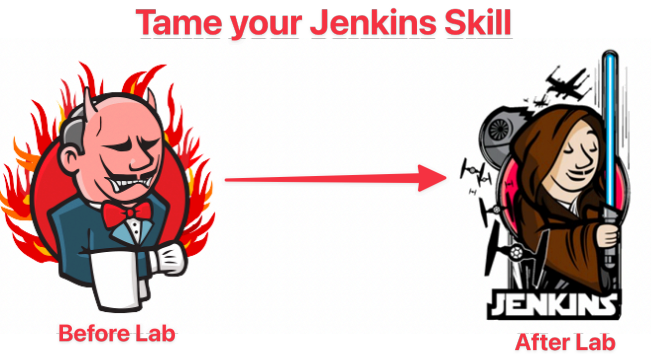
🧭 Jenkins CI/CD pipeline overview
In this week lab, we will setup this
CI/CD
pipeline
as below:
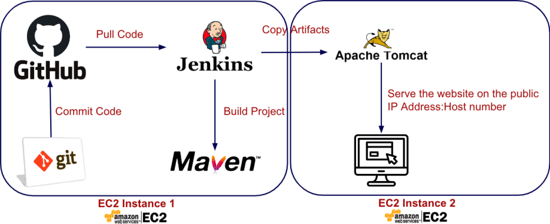
As you can see, we are dealing with two different
EC2
instances (which are very common for microservices).
Architecture checkpoint: Why might Jenkins and Tomcat belong on separate servers? Consider credentials, blast radius, resource contention, and independent scaling.
🧰 Set up the Jenkins server
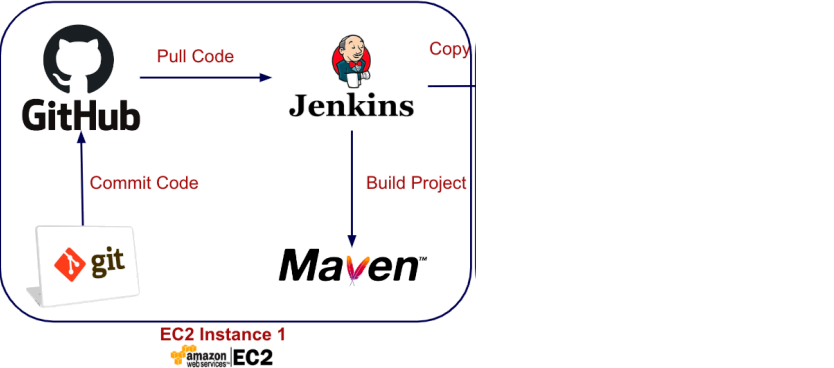
Here are the overall steps to setup a Jenkins server on the first
EC2
instance 1 (Jenkins Server):
-
Set up Linux on EC2 instance 1.
-
Install Java.
-
Install & Setup
Maven. -
Install & Setup
Jenkins. -
Integrate Jenkins with
GitHuband Maven using plugins.
-
Your task: Set up the Jenkins EC2 instance as follows:
-
Here are the settings of the Jenkins Server for EC2:
-
Name:
Jenkins_Server -
OS: default Amazon Linux 2023 AMI
-
-
Instance Type: t3.micro
-
Key pair: select and reuse your old key in other labs (
devops_project_key) -
Storage: 15GB (since Jenkins build can be large for big projects)!
-
Security Group:
-
Optional Name:
Jenkins_Security_Group -
Source Type: Anywhere
-
Open two ports:
-
22 for
SSH -
8080 for Jenkins
-
-
-
-
After launching the instance then, in the EC2 dashboard you should see the
Jenkin_ServerEC2 running: -
The most important information is the Public IP address of your EC2 instance which will allow us to connect SSH to the server to control it:
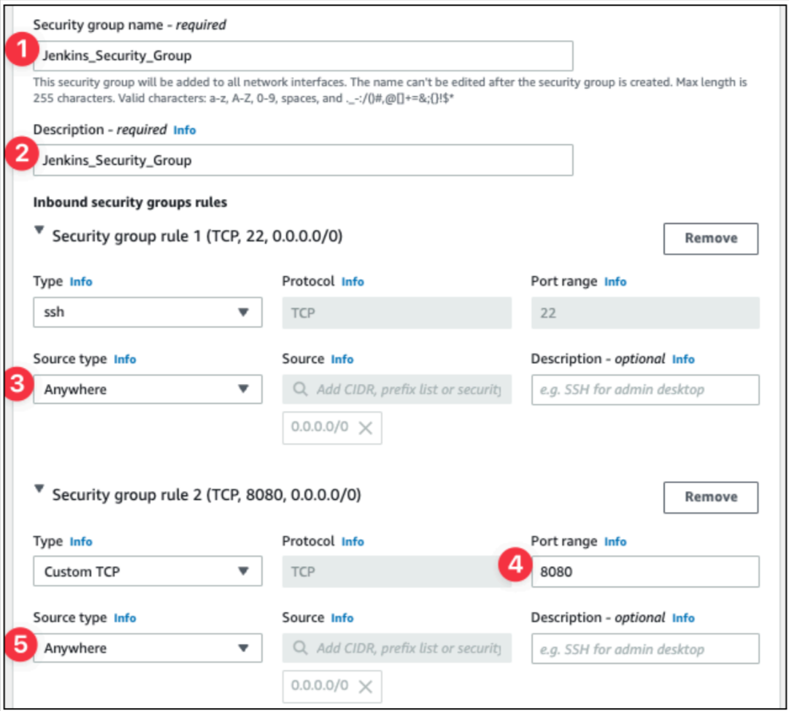
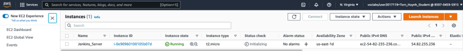
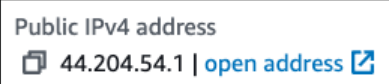
-
After that, let’s SSH to the Jenkins Server on EC2:
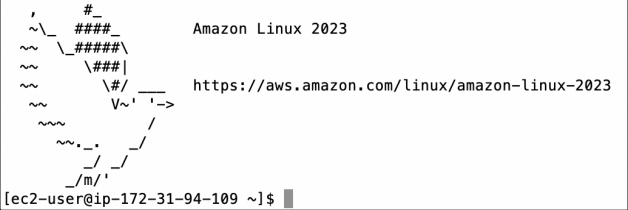
-
To keep things simple without dealing with permission, let’s login as a root user and change our current directory to /root:
sudo su --
You are now the root user and have unrestricted system privileges. You can check your current directory, which should tell you that you are at root directory:
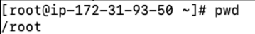
💾 Allocate more disk space to Temp directory (/tmp) for Jenkins to work
-
Before installing
Jenkins, let’s check the available disk space allocated for the Temporary directory (/tmp):
df -h /tmp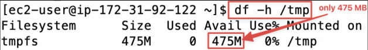
-
The initial
/tmpallocation is too small for reliable Jenkins builds. Jenkins may warn below 2 GB and take an agent offline below 1 GB, so this lab allocates 3 GB. -
Open the
/etc/fstabfile which defines how and where disk partitions, devices, or other file systems should be mounted:
sudo nano /etc/fstab-
At the end of the file, add the following line. This line tells the system to mount /tmp as a tmpfs with a size limit of 3GB every time the system boots:
-
tmpfs: Specifies the filesystem type, which is a temporary filesystem stored in RAM.
-
/tmp: The mount point. This means /tmp will be mounted as a tmpfs
-
defaults,size=3G: Mount options. defaults applies default settings, and size=3G limits the size to 3GB.
-
Dump: 0 means "do not dump" the filesystem for backups.
-
Fsck order: 0 means "do not check" the filesystem at boot.
-
tmpfs /tmp tmpfs defaults,size=3G 0 0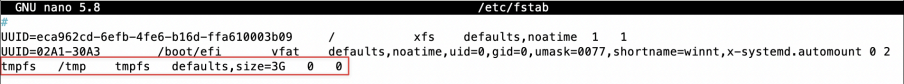
-
To apply the changes without rebooting the
EC2, let’s manually remount /tmp:
mount -o remount /tmp-
Check that /tmp is now mounted with the specified size:
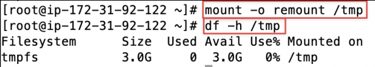
-
[Optional] You can choose to reboot the EC2 server to double check if the /tmp directory’s space allocation would still have 3GB or revert back to 475MB:
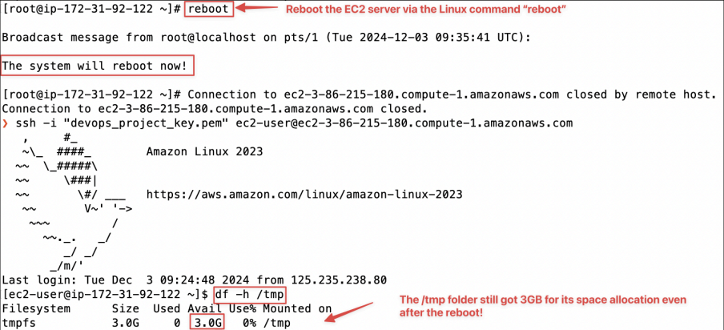
📦 Install Jenkins
-
Cool, now we need to install
Jenkins, let’s open this website: https://www.jenkins.io/download/ -
Choose the stable LTS release for this lab. Select the Red Hat/Fedora installation instructions because they match the RPM-based Amazon Linux environment used by this EC2 instance:
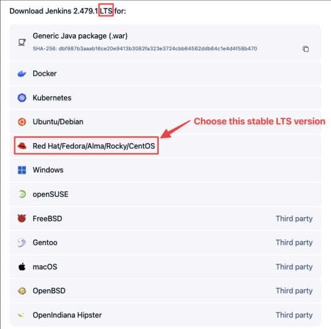
-
We should see the instructions to download and install Jenkins:
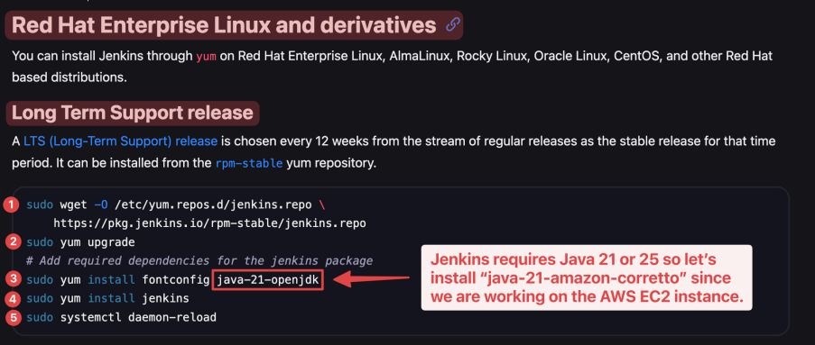
-
So let’s follow those above instructions commands, copy them into the terminal:
-
First, add the official Jenkins package repository so the instance knows where to obtain Jenkins and its updates:
-
sudo wget -O /etc/yum.repos.d/jenkins.repo \
https://pkg.jenkins.io/rpm-stable/jenkins.repo
sudo yum upgrade-
Next, install Fontconfig and Java 21, which Jenkins requires:
-
Fontconfig’s purpose is to provide the necessary font management and configuration support to ensure that Jenkins can properly render fonts and display text when generating graphical content like charts, reports, or logs that include graphical elements.
-
sudo yum install fontconfig java-21-amazon-corretto-
Finally, we can install jenkins after installing Java:
yum install jenkins-
You should see the message like so:
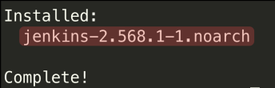
-
Reloads systemd to recognize new or updated service files, including the Jenkins service that was just installed:
sudo systemctl daemon-reload▶️ Start Jenkins
-
Now, we can check the current status of our jenkins:
service jenkins status-
You should see that the status of jenkins is currently inactive (dead):
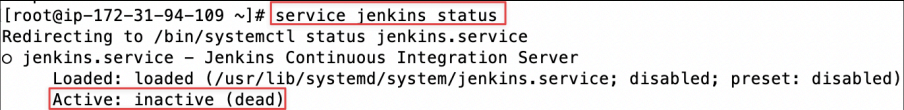
-
You can start jenkins like so, it could take a few minutes to start:
service jenkins startAnd you should see the message it is starting like so:
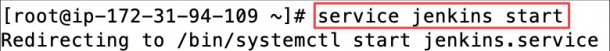
Please be patient as it could take a few minutes for
Jenkins
to start for the first time.
-
Now, we can check the current status of jenkins again:
service jenkins status-
You should see that the status of jenkins is currently running at the port number 8080:
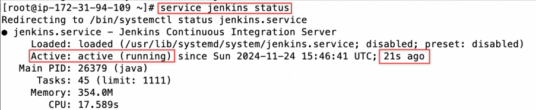
-
Now we can try to access Jenkins via the public IP address which I have mentioned before via the port number 8080 :
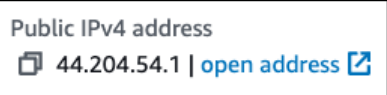
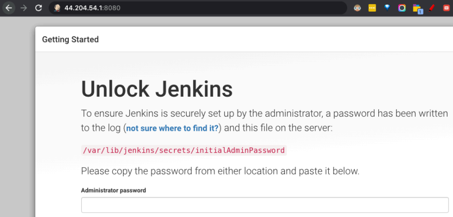
-
As you can see that, Jenkins tells you that the default admin password is in the file “
/var/lib/jenkins/secrets/initialAdminPassword”, so we need to copy it and paste to the Administrator password to login to the Jenkins admin dashboard:
cat /var/lib/jenkins/secrets/initialAdminPassword-
In my case, the default admin password is:
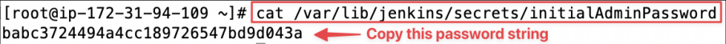
-
Copy that string and paste that to the password login field and press Continue:
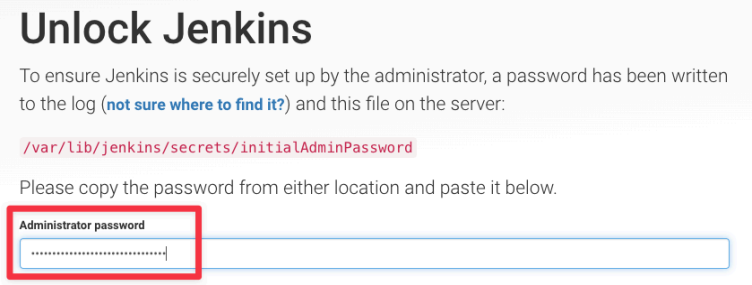
⚙️ Initial Setup for Jenkins
-
After the password is accepted, we are greeted with this page to install plugins. However, we are learning and want to install plugin one by one as we go, so let’s close (x) this page for now:
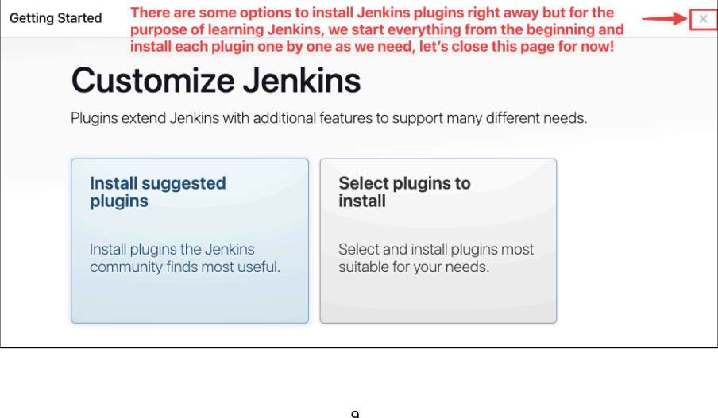
-
That’s it! you can start to use
Jenkinsnow! Remember, the username is “admin” and the password is the one you have accessed just now!
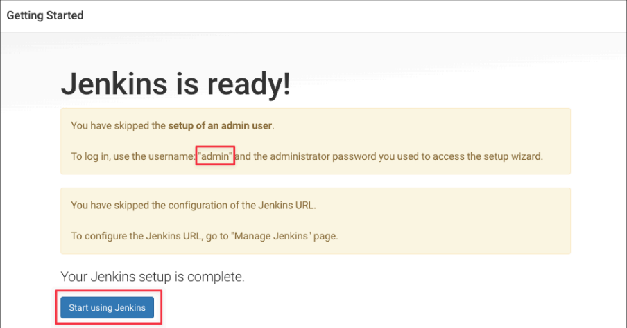
-
Now, you should see the Jenkins admin dashboard like below! Congrats, you have successfully installed Jenkins on an
AWSEC2instance and accessed its dashboard through a public IP address which is super cool!
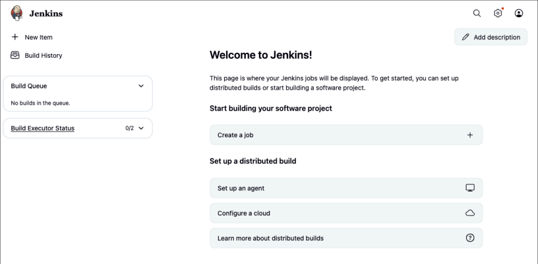
-
Y ou can confirm that the /tmp disk space has been allocated to 3GB for Jenkins so all Jenkins agent nodes are working as usual without any problem.
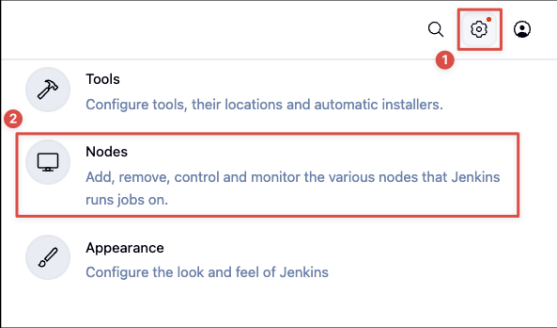
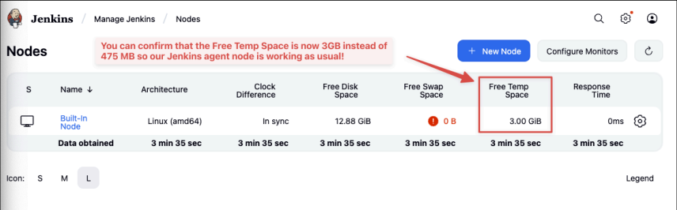
[Optional - If you choose not to allocate more temp disk space as I instructed above] [STARTS] If you did not allocate more space for /tmp then the Jenkins agent node might be shutdown. Let’s fix a few things in the warning message before we can move on:
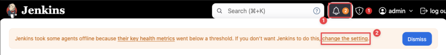
-
Let’s select this option as we do not want Jenkins to force the agent node to be offline when the Temp Space (/tmp) is low on disk space so that we can build our Jenkins’ jobs without any problem.
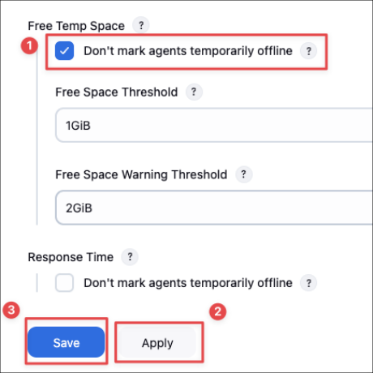
-
Let’s bring our Jenkins agent node back online after we update the above setting:
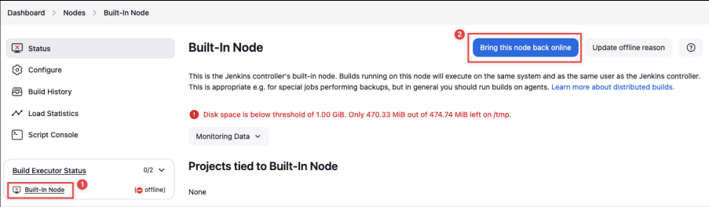
[Optional - If you choose not to allocate more temp disk space] [ENDS]
-
Set the server's time zone to our local region: Asia/Ho Chi Minh so when we check out the build log in Jenkins, all of the date time of each build run is based on the correct timezone, which is very helpful to figure out the exact time when things go wrong:
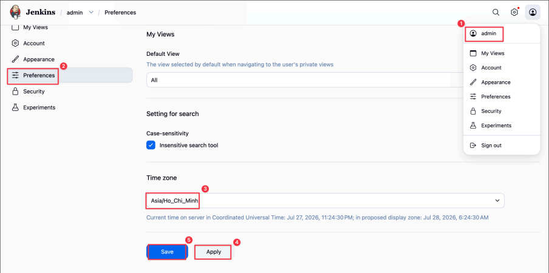
-
Setup a new password for the admin Jenkins user , so next time you login Jenkins dashboard, you can use the new password you set:
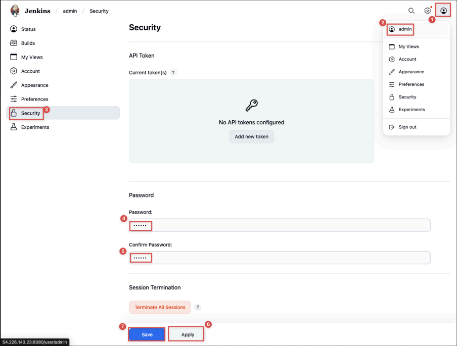
-
After changing the password, you will get kicked out from the security page, please just refresh the URL of your jenkins dashboard and enter the admin username and your new password to login:
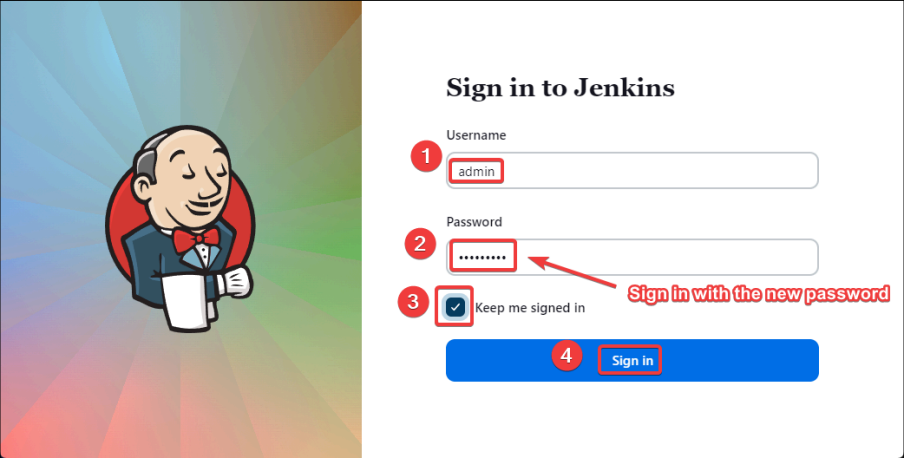
🚀 Run First Jenkins Job
We're gonna create a first
Jenkins
job for fun which only executes some simple bash command to demonstrate Jenkins.
-
If you are not in the main page of dashboard, click on the logo of Jenkins to be back to homepage:
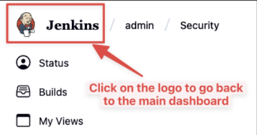
-
Create a new item:
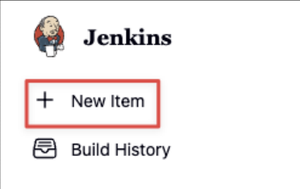
-
Enter the item name and select it to be Freestyle project:
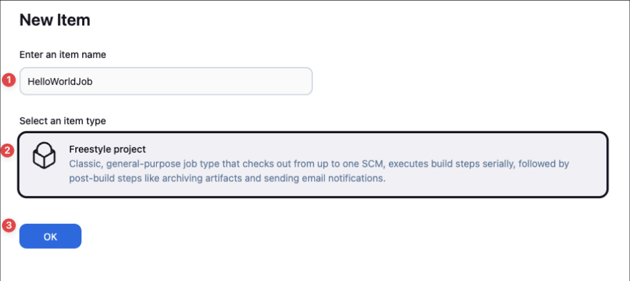
-
Enter the description of this Jenkins job and select build to execute shell as we want to run the bash command line:
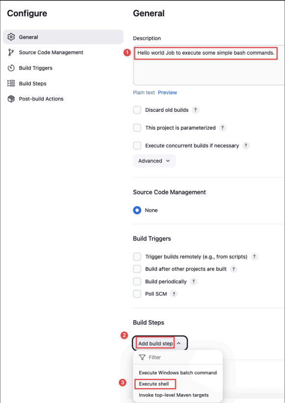
-
You can type the bash linux commands in the command shell like so:
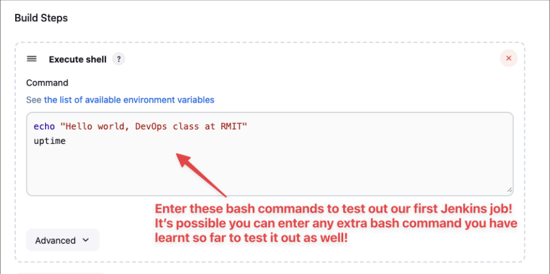
-
Choose apply then save it to be sure your first Jenkins job is saved and redirect back to the dashboard of that job:
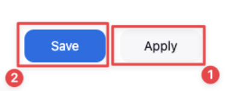
-
To execute the Jenkins job, we can click on the “Build Now” button!
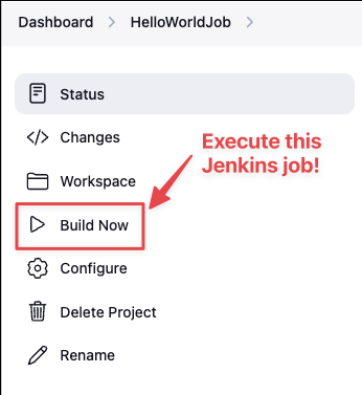
-
Check the result of your Jenkins build:
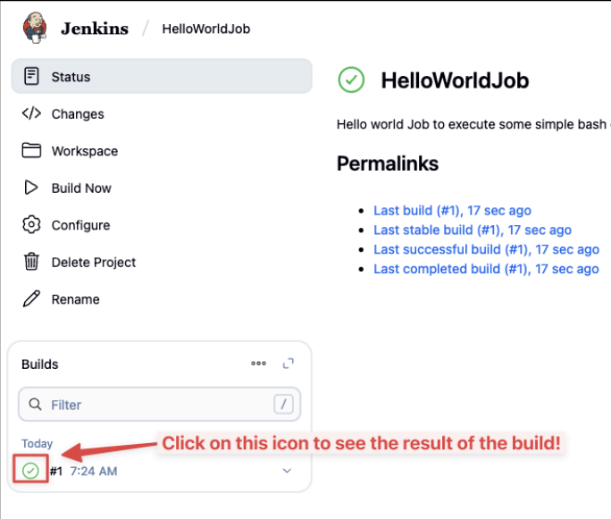
-
Now you should see the output of your build:
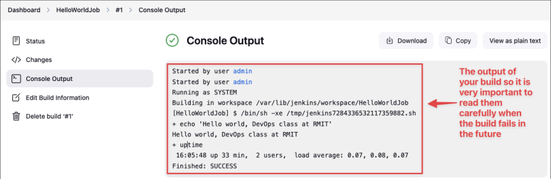
-
This is exactly similar to how we have to run the bash command lines by typing them manually in the terminal! You can try to type the same bash commands to test it out:
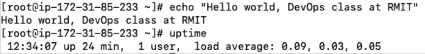
🔗 Integrate Git & GitHub with Jenkins
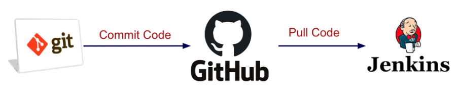
The overview steps:
-
Install Git on
JenkinsEC2instance-
Install
GitHubPlugin on Jenkins GUI -
Configure Git on Jenkins GUI
-
-
Install git on the EC2 instance using this command:
yum install gitTo confirm the installation, you need to type “y” for yes:
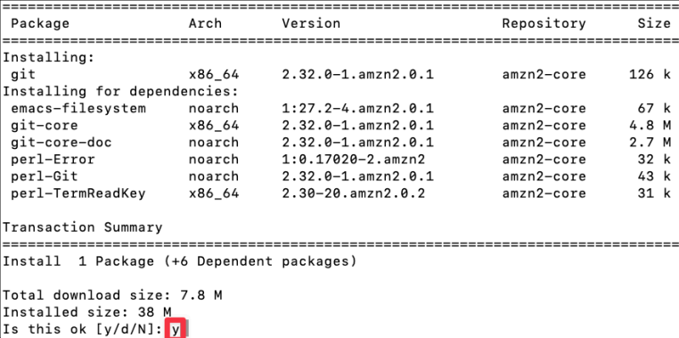
-
After git installation, you can check the version of git:
git --versionYou should see the current version of git installed like so:
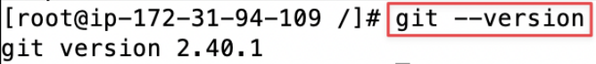
-
Let’s go back to the main dashboard page of Jenkins:
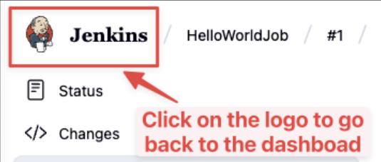
-
It's time to install Git plugins on Jenkins GUI, go to manage plugins in Jenkins:
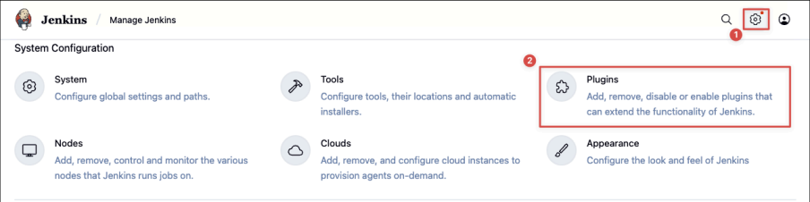
-
Search “ GitHub " plugins in the available plugins to install and select the first option:
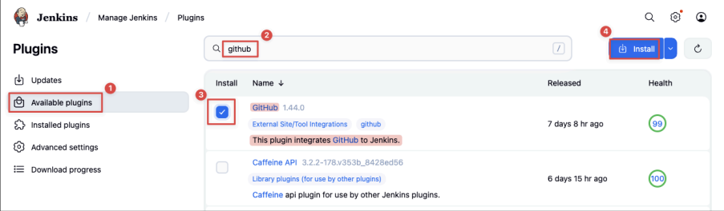
-
Wait while Jenkins installs the GitHub plugin and its dependencies:
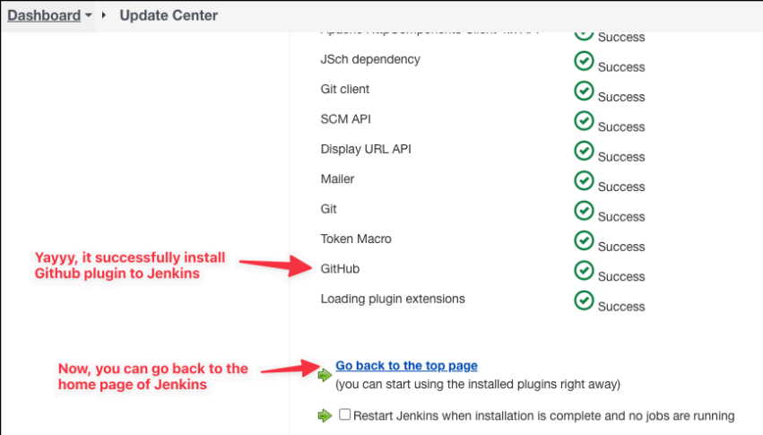
-
Let's configure the GitHub plugin we just installed:
-
As long as, the configuration looks like this, then it should be good enough:
-
Run Jenkins job to pull code from GitHub
In this session, we will use a GitHub repository containing a simple website:
-
Fork the repository so you have your own GitHub copy to modify and push:
-
Note: Whenever I refer to this GitHub repo in this lab, then you should use your own forked GitHub repo to follow these instructions. Because you are required later on to commit and push changes to your own public forked GitHub repo in this tutorial.
-
Copy the repository URL from your own GitHub fork:
The URL of this Hello World GitHub repository is:
-
Create a new item in Jenkins:
-
Create a new job as following:
-
Fill in the details of this new job as following:
-
Alright, it's time to build this job and see the result:
-
Let's check this result:
-
You can double check if the jenkins job has pulled the simple website repo to the default workspace like it said. You should see that every files in the hello world repo are there in the jenkins workspace folder in EC2 instance:
-
Or you can check out files and directories in the workplace of this job in the dashboard like so:
Yeah, so you know how to use Jenkins to create a job to pull code from a public GitHub repo. However, we need to use
Maven
to build this web project to create a
WAR
file.
🔗 Integrate Maven with Jenkins
-
Important Note: Please install
Mavenon this Jenkins Server like you have practiced before in the previous lab. If you forgot then please open the previous lab to repeat the steps to install and set up Mavens (“Install Maven on theEC2instance” section). -
After completing the Maven setup, verify that
mvnis available from the shell:-
Note the maven version could be different to yours in the screenshot.
-
mvn -vNow, we just need to let Jenkins know the locations of Maven folders.
-
Open
Jenkinsadmin dashboard again, and go to manage plugins:
-
Let’s install Maven integration plugin:
-
You need to wait for it to install dependencies and the Maven integration plugin:
-
Let’s set up configuration settings for the Maven plugin. First, let’s tell Maven plugin where is the path of
JDK:
-
At the JDK section,
-
Add JDK Name and
JAVA_HOMEas following:-
Note that your JDK specific version number could be different to yours in the screenshot below:
-
-
Secondly, let’s tell Maven plugin where is the path of Maven in our EC2 instance:
-
The name is up to you so you can choose to name it as simple as “maven”.
-
Time to apply and save the configuration for the JDK and Maven:
-
Alright, it’s time to create a new Jenkins job to build our Maven project from GitHub:
-
Select Maven project to be the Jenkins job type we want:
-
Let’s fill in the details:
The description is up to you so name it meaningfully!
The same details of Git and
GitHub
repo URL as before:
-
So let’s use “clean” and “package” for our Maven build phases:
-
As we have learnt, every Maven project has specific goals and options. In the previous lab, we use “mvn package” to compile and package the project into a
WARfile. This time, we will use “mvn install” which will do all the things that “package” does, additionally it will add a packaged war file in the local repository as well. Also we are using the clean command, which will delete all previously compiled Java.classfiles and resources (like.properties) in your project. Your build will start from a clean slate every time!
-
Time to apply and save:
-
Let’s get the real action of Jenkins:
As you can see, our Jenkins job built successfully, by looking at the end of the log:
The
webapp.war
is built successfully (The WAR Plugin is responsible for collecting all artifact dependencies, classes and resources of the web application and packaging them into a web application archive
)
-
You can check the location of the our first Maven project build as following:
So far, we got this CI (Continuous Integration)
pipeline
:
-
Jenkins pulls the code from GitHub to the EC2 instance.
-
Then Jenkins uses Maven to build the code to create WAR artifacts which are ready for deployment on the
Tomcatweb server!
-
🐈 Set up the Tomcat server
[You
can
reuse
your
existing
“
Maven_Tomcat_Server
”
EC2
from
last
week
tutorial
to
save
time
instead
of
setting
up
a
new
Tomcat
EC2
server
from
beginning
then
skip
to
the
“Instructions
to
setup
Deployment
on
the
Jenkins
Server”
section]
Use the second EC2 instance as the Tomcat server and complete these steps:
-
Set up Linux on EC2 instance 2.
-
Install Java.
-
Install & Setup Tomcat.
-
Start Tomcat.
-
-
Access Tomcat Admin Web UI on
port 8080.
Your task: Set up the second EC2 instance as the Tomcat server like so:
-
Use the following settings for the Tomcat EC2 server:
-
Name:
Tomcat_Server -
OS: default Amazon Linux 2023 AMI (Free-tier)
-
Instance Type: t2.micro (Free-tier)
-
Key pair: select and reuse your old key in other labs (
devops_project_key) -
Storage: Default 8 GB is plenty enough!
-
Security Group:
-
Optional Name:
Tomcat_Security_Group -
Source Type: Anywhere
-
Open two ports:
-
22 for
SSH -
8080 for Tomcat
-
80 for HTTP (Optional but useful in the future)
-
443 for HTTPS (Optional but useful in the future)
-
-
-
-
After launching it, you should have two EC2 instances like so:
📦 Install and Setup for Java & Tomcat
-
Please
SSHto theTomcatServer.
-
To keep things simple without dealing with permission, let’s login as a root user and change our current directory to /root:
sudo su --
The important dependency of Tomcat is
JDK21, so let’s install JDK21 with the usual installation command.
yum install java-21-amazon-corretto-
Important Note: Please install Tomcat on this Tomcat Server like you have practiced before in the previous lab. If you forgot then please open the previous lab to repeat the steps to install and set up Tomcat (“Install Tomcat (Web Server) on the
EC2instance” section). -
There are two important steps in the previous lab you need to do:
-
Please comment out or remove the local IP address restriction for the Tomcat manager in this file:
/opt/tomcat/webapps/manager/META-INF/context.xml -
Also, please do the steps to add a few users with right permissions to use Tomcat which is in the file
tomcat-users.xml(/opt/tomcat/conf/tomcat-users.xml) as we will need to use the username and password of Tomcat later on:
-
-
Make you can see the Tomcat dashboard available via the public IP address of the EC2 instance via the
port 8080:
🚀 Configure deployment from Jenkins
-
After
Tomcatinstallation in the secondEC2instance, Now, let’s go back to the first EC2 instance (Jenkinsserver) and install deployment plugin for Jenkins to deploy on Tomcat server:
-
Install the plugin “Deploy to Container”:
-
Its purpose is specifically for deploying Java web applications (e.g.,
.warfiles) to servlet containers like Tomcat.
-
-
Let’s add credentials of Tomcat users to deploy our web application:
-
Choose “System” in the credentials context:
-
Choose “Global” which are credentials that available to all jobs, agents, and users across the entire Jenkins instance:
-
Remember that we have an admin user of Tomcat to have a “manager-script” role so this specific “admin” user can run script from one instance to manage another instance (from Jenkins Server to Tomcat Server):
-
Now, you should have the credentials like so:
-
Nice, now we are ready to create a new Jenkins job to build and deploy on Tomcat Server:
-
Please fill in the details of this job:
-
Description:
-
-
Git:
-
MavenBuild:
-
Post-build Actions(Things happens after building completion):
-
We are done with the configurations of that Jenkins job:
-
It’s time to build and deploy with our new Jenkins job:
-
Let’s look at the build log and try to understand it:
-
Alright, it seems alright! Git pull -> Maven Build -> Deploy on Tomcat done! Let’s check the website:
Super glorious! We love to see that!
-
You can login as Tomcat admin to check out the Manager App to see if your War file is in the webapps directory:
-
That’s pretty awesome!
🔄 Auto-deployment with Poll SCM to trigger build when pushing a new GitHub commit
-
However, there is one more thing we want to do is that the build process on
Jenkinsshould be automated instead of manual as we still need to click on the build button for this Jenkins job to run!
-
That’s why let’s go back to this job and modify its configuration:
-
Add the schedule like “* * * * *” to the
Poll SCMwhich is going to be an expensive operation.Trigger checkpoint: Polling every minute and receiving a webhook can both start a build. Which produces more unnecessary work, and which depends on GitHub being able to reach Jenkins?
That’s it! Your task now is to test if this works:
-
Clone the public Git repository to your computer.
-
Modify the
index.jspfile to add some lines. -
Git add, commit and push that change to your
GitHubrepo. (To do that, you need to use a GitHub personal access token or set upSSHkeys for GitHub. For a quick test, you can instead edit and commit the file directly on the GitHub website.) -
Then check the build history of BuildAndDeploy job to see if there is any build trigger automatically whenever you push a new change to your GitHub repo.
Alright! That’s pretty cool for a nice automation from Development ➜ Commit and Push to GitHub ➜ Jenkins pulls the new version of your code on GitHub ➜ Jenkins builds the new artifacts of the project using
Maven
➜ Jenkins deploy that artifacts on
Tomcat
server ➜ Customers can see the new features of the website immediately with no downtime!
Congratulations for building your first basic
CI/CD
pipeline
using Jenkins!
[Important Note] Please do not delete the Jenkins server after you finish this week's tutorial as we still need it for next week's tutorial with Docker! Otherwise, you might need to set up the Jenkins server all over again to follow the next week's tutorial!
🧪 Challenge 1: Trigger Jenkins with GitHub webhooks
-
Poll
SCMis very easy to set up as it does not require additional integration or setup outsideJenkins. However, it is quite inefficient as Jenkins continuously checks if there is any new change of the repository, even when no changes are made. As a result, this consumes more resources, especially when polling frequently or with large repositories. -
GitHubHook Trigger for GITScm Polling is more efficient as there is no periodic polling; Jenkins acts only when notified of changes (real-time triggers). As a result, it reduces unnecessary load on both Jenkins and Git servers. However, it has more complex steps to set up as it requires GitHub repository admin rights to set up webhooks.
Instead of using
Poll SCM
, can you try to use the “GitHub hook trigger for GITScm polling” option to trigger builds efficiently?
Follow these steps to configure it:
-
Configure GitHub Repository:
-
Go to your repository on GitHub.
-
Navigate to Settings > Webhooks.
-
Click on Add
webhook.-
Payload URL : Use http://
<JENKINS_URL>:<PORT>/github-webhook/ (replace<JENKINS_URL>and<PORT>with your Jenkins URL and port). -
Content type : Select application/json.
-
Secret : Leave blank (optional).
-
SSL verification : Enable.
-
Trigger events : Select Just the push event.
-
-
-
Install Required Jenkins Plugins
-
GitHub Plugin (if not yet installed)
-
-
Enable GitHub Hook Trigger in Jenkins Job
-
Select GitHub hook trigger for GITScm polling for the Jenkins job!
-
-
Test the Webhook
-
Go back to your GitHub repository settings.
-
Under Webhooks, click on your newly created webhook.
-
Click Redeliver to send a test payload to Jenkins.
-
-
Go to Jenkins Dashboard > Manage Jenkins > System Log.
-
Verify that the webhook payload is received by Jenkins.
-
Test with a real Commit
-
Go to the GitHub repo
-
Make a change and commit
-
Check your Jenkins job to see if the build is triggered automatically.
-
In the log of the build triggered by
GitHub Webhook, you should see this:
-
🧪 Challenge 2: Authenticate a private repository with a GitHub PAT
Objective:
In the tutorial so far, to keep it simple, you have been working with a public
GitHub
repo. However, in real-life projects, most of the company projects are in private repos.
When working with private GitHub repositories,
Jenkins
needs proper authentication credentials to access the repository. This challenge guides you through setting up Jenkins to securely pull code from a private repository.
⚠ Reminder: Your GitHub repository must be private to simulate real-world
CI/CD
scenarios and prepare you for the exam. You should have received a private GitHub Classroom repository for this challenge. If you haven't received it yet, please contact your instructor.
📦 After receiving your private GitHub Classroom repo:
-
Add some files to your repo (e.g., a simple README or
.javafiles), or upload a sampleMavenWeb Project. -
This will allow you to verify later that Jenkins can clone or pull the repository contents successfully when configured.
🔧 Step-by-Step Instructions:
-
Step 1: Generate classic
Personal Access Token(PAT) from GitHub-
Select scopes:
-
repo ( Full control of private repositories)
-
admin:
repo_hook(To read repo webhooks) -
deplete_repo(Delete repositories)
-
-
-
Step 2: Add GitHub Credentials to Jenkins
-
Manage Jenkins > Credentials > System
-
The credentials (e.g., Global credentials), click Add credentials.
-
Kind: Username with password.
-
Username: Your GitHub username.
-
Password: Paste the generated PAT here.
-
ID: Enter a recognizable ID like
github-private-repo-credentials. -
Description: Add an optional description (e.g., "GitHub PAT for private repositories").
-
-
-
Step 3 : Configure Jenkins Job to Use the Credentials
-
Under Source Code Management, select Git.
-
Click on Credentials and select the credential ID you created (
github-private-repo-credentials).
-
-
Step 4 : Test the Configuration
-
Build the Jenkins job.
-
Check the build log:
-
If successful, you should see Jenkins fetching the repository code.
-
If there’s an error, ensure the PAT has the correct permissions and was copied correctly.
-
-
Notes:
-
For security, never expose your Personal Access Token in job logs or configuration files.
-
If your team uses
SSHfor GitHub authentication, you can configure Jenkins with an SSH private key instead (you should research how to set up SSH private-key authentication instead of PAT for more secure GitHub authentication)
🧪 Challenge 3: Authenticate a private repository with SSH
Objective
: In a professional environment,
SSH
key pairs are often used to securely authenticate
Jenkins
with external services like
GitHub
. Your task is to set up SSH key-based authentication for Jenkins and use it to securely pull code from a private GitHub repository.
Here are some general steps for your hints:
-
Generate SSH Key Pair for Jenkins
-
SSH into the Jenkins server (
EC2Instance 1). -
Generate an SSH key pair for Jenkins using the following command:
-
ssh-keygen -t rsa -b 4096 -C "your-email@your-company.com"
-
-
Press Enter to save the key to the default location (~/
.ssh/id_rsa) and skip the passphrase by pressing Enter again. -
Pay attention to the location of these public and private key files:
-
Private Key: ~/
.ssh/id_rsa -
Public Key: ~/
.ssh/id_rsa.pub
-
-
-
Add the Public Key to GitHub
-
Copy the public key content:
-
cat ~/
.ssh/id_rsa.pub
-
-
Go to GitHub:
-
Navigate to Settings > SSH and GPG Keys.
-
Click New SSH Key.
-
Paste the copied key content and save it.
-
-
-
Add the Private Key to Jenkins
-
Access the Jenkins dashboard and navigate to: Manage Jenkins > Manage Credentials > (Global) > Add Credentials.
-
Select the credential type SSH Username with Private Key and configure it:
-
-
Username: git
-
Private Key: Select Enter directly and paste the private key content:
-
cat ~/
.ssh/id_rsa -
ID: Use an easily recognizable ID, such as ssh-key-github.
-
Description: Add a description like SSH Key for GitHub.
-
-
-
Update Jenkins Git Host Key Verification Strategy
-
Jenkins is enforcing strict host key verification, and you need to configure it appropriately to make it work for the purpose of testing!
-
Go to Manage Jenkins > Security
-
-
Choose No host key verification temporarily for testing (not recommended for production environments).
-
Configure Jenkins Job with SSH-based GitHub Repository URL
-
Go to your Jenkins job settings.
-
Under Source Code Management, select Git.
-
Enter the repository URL in SSH format:
-
git@github.com:username/private-repo.git
-
-
In the Credentials field, select the SSH credentials (ssh-key-github) you added earlier.
-
-
Test the Configuration
-
Save the Jenkins job configuration.
-
Trigger a build for the job.
-
Verify in the build logs that Jenkins successfully clones the private repository.
-
-
Troubleshooting Tips (if something goes wrong)
-
If the build fails with permission errors:
-
Ensure the SSH key is correctly added to your GitHub account.
-
Verify that the GitHub repository URL uses the git@github.com format.
-
-
Test the connection from the Jenkins server to GitHub:
-
ssh -T git@github.com
-
You should see a success message indicating a successful authentication.
-
-
[Question]
Why is SSH key-based authentication preferred over Personal Access Tokens (PATs) for Jenkins in
CI/CD
pipelines
?
🧪 Challenge 4: Stop deployment when tests fail
Objective
: Ensure that the
CI/CD
pipeline
halts the deployment process if a critical test (such as verifying the presence of an HTML component) fails. This challenge demonstrates how to add automated validation as a gatekeeper in your
Jenkins
pipeline and prevent faulty code from being deployed to production.
Problem Statement: In a typical CI/CD pipeline, automated testing ensures code quality before deployment. If a test fails, the deployment process should stop to prevent incomplete or faulty features from reaching the server. Your task is to:
Quality-gate checkpoint: At exactly which stage should a failed test stop the pipeline, and what diagnostic evidence should Jenkins preserve for the developer?
-
Integrate a test step into the Jenkins pipeline to validate the presence of an expected HTML component in the
index.htmlfile (e.g.,<h1>DevOps</h1>). -
Stop the deployment to a
Tomcatserver if the test fails. -
Notify the development team when the deployment is blocked due to a failed test.
Steps to Complete the Challenge
-
Modify your existing Jenkins job to include a testing stage before the deployment stage:
-
Add a Test Step: Build Step > Execute Shell.
-
Enter the following script to test if an HTML component exists:
-
This script checks for a title element in the
index.htmlfile. Adjust the search term in the grep command as needed. -
exit 1 ensures the build step fails if the HTML component is not found or the
index.jspfile is missing. Jenkins interprets any non-zero exit code as a failure, which marks the build as FAILED, which will prevent subsequent stages like deployment.
-
-
# Work from the repository checked out by Jenkins
cd "$WORKSPACE"
# Fail immediately when the expected JSP file is missing
if [ ! -f src/main/webapp/index.jsp ]; then
echo "Error: index.jsp not found!"
exit 1
fi# Require the expected title before deployment
if grep -q "<title>Hello DevOps Students!</title>" src/main/webapp/index.jsp; then
echo "HTML component found!"
else
echo "Error: HTML component not found!"
exit 1
fi-
[Optional] Configure a notification system (e.g., email or Slack) to alert the team about the failure. Use the Email Notification Plugin or Slack Plugin for this purpose.
-
Test the Pipeline:
-
Modify the
index.jspfile in yourGitHubrepository to intentionally miss the required HTML component. -
Commit and push the changes to your GitHub repository.
-
Trigger the pipeline and verify:
-
The pipeline stops at the testing stage with a failure.
-
Notifications are sent to the team about the failure.
-
-
Restore the correct
index.jspfile, commit, and push again. Ensure the deployment proceeds successfully.
-
Success build log screenshot:
Fail build log screenshot:
📝 Jenkins security and networking notes
This is a
naive
example
of testing, intended purely for learning purposes. While the simple grep command demonstrates how to implement basic validations in
Jenkins
, it is not sufficient for real-world web application testing. For robust and scalable testing in real-world applications, consider the following:
-
Selenium : For browser-based automation and end-to-end testing.
-
JUnit/TestNG: For unit and integration testing in Java applications. -
Mockito : For mocking dependencies during Java tests.
-
Spring Boot Test Tools : For REST API and service layer testing.
-
JaCoCo : For code coverage analysis.
-
Cypress/Playwright : Modern alternatives to Selenium for end-to-end testing.
-
Jenkins Plugins : Use plugins like JUnit, Selenium, and JaCoCo to integrate test results into your
pipeline.
These tools enhance testing for web applications, ensuring reliability and production-readiness.
Extra Reading:
-
Setup
CI/CDPipeline with Jenkins by usingAWSCodeBuild and AWS CodeDeploy